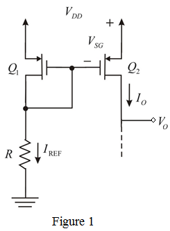

The minimum output voltage is obtained at the maximum drain to source voltage.

Refer to Figure 7.22 in the textbook for the MOSFET constant current source:
The p-channel counter part of the current-source circuit is shown in Figure 1.

The minimum output voltage is obtained at the maximum drain to source voltage.
Calculate the value of  .
.
Now, the value for the resistor is,
Thus, the value of resistor  is
is  .
.
The drain current is,
Substitute  for
for  , for ,
, for ,  for , and
for , and  for
for  in the equation.
in the equation.
Thus, the  ratio is .
ratio is .